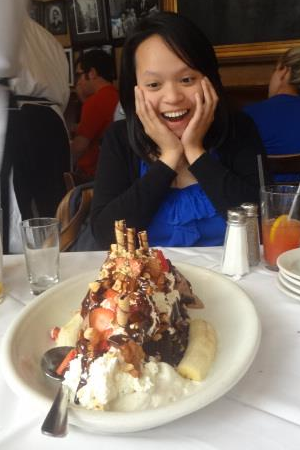

A wild koala bear in her natural habitat eating icecream.
Pictured above is the only known member of the koala bear species that authorities have found so far.
- Just What is a Koala Bear?
- Koala bear, A.K.A. "Ness", is a type of animal that loves to eat! You know you spotted one when you see a walking apple with fur and flapping ears.
- Habitats of Koala Bear
- Koala bears have been known to make their dens throughout a house. Some of theses locations include couches, man caves, and even chairs.
You know you have stumbled upon the dwelling of a koala bear when you hear a sudden snore and funny noises. Do not panic! Such sounds are only of the koala bear talking in it's sleep. - Personality of Koala Bear
- Although koala bears might appear grumpy and mean due to their unusal eating and sleeping habbits, theses creatures are actually quite gentle and kind.
They are caring, funny, generous, loving and most of all, huggable creatures!